The following is the tenth part from a series of articles describing the adventure that a follower who goes by the handle "daegonmagus" has experienced since reading MM. They are very interesting and fascinating. I hope that you all learn from his journey and maybe learn a thing or two as he relates his unique experiences to the readership here. -MM
Below is a briefing document which equates to about 7 years worth of LD espionage into amnesia compounds by both myself and my wife, SD.
While it rehashes a few things I have already talked about, I think it contains some info the Commander will consider as being quite valuable.
I am very interested to hear yours and his opinions of it, particularly the first impression you get from him “absorbing” it.
Be warned, it is about 12k worth of words, so might take you a good amount of time to go through. There will be further documentation in the coming weeks in regards to my opinions on how LD assets can be effectively used to tackle this amnesia problem.
I also have a few questions for the Commander, but as there is already a couple of question in the document I will hold off asking them for your sake.
Part 10 – Combined LD Asset Penetration Into Amnesia Infrastructure
This is a briefing document to be relayed to the Domain Commander via Metallic Man outlining about 7 years worth of recon work into various locations by two very accomplished LD Assets – DM and SD – carried out between the years 2008 to 2015 to aid in the identification of potential abusers of the amnesia prison system infrastructure as well as the possibility of hijacked consciousness templates.
This is not a singular experience; majority of the locations mentioned in this document have been repetitively observed and experienced numerous times during Lucid Dreaming by both DM and SD over this 7 year period as well as other LD assets.
This is a unique opportunity for the Domain and MM readers to gain an understanding of these non physical locations from 2 separate sources that have been able to openly discuss these experiences on a regular basis free from the constraints of societal bias and vilification to verify them.
This document is to function as an addendum to a personal request by the Domain Commander for me, DM, to undertake lucid espionage into such compounds, as relayed to me via ex-MAJestic Agent MM in a personal email.
Given that a fair understanding of my background in LD has been given to the MM readership, I must point out that SD is at a very similar level of experience in LD to me – if not better – and has experimented with it almost as much as me.
Note that SD has been able to view a similar consciousness sorting mechanism as described by MM through utilizing her LD skillset. Also note that while I have agreed to help the Domain in their effort of identifying the amnesia machinery, my loyalty is ultimately to the Elder Guardians and their approved alliances first and foremost.
This is understood. -MM
My willingness to help the Domain comes from the idea that the goals of these two organizations are aligned; to put a stop to the amnesia machinery which will ultimately allow the extraction of members of each organization who have become trapped in the “earth prison”.
Anyone involved in such an effort is to be considered a friend by me for at least the duration of this project.
Just as the Domain are responsible for the 3000 members of their lost battalion, I am responsible for the 20k+ consciousnesses that came here at the direction of the Elder Guardians for a similar retrieval operation.
Therefore the Domain have my permission to alter my non-physical body to whatever extent they deem necessary provided it is to benefit this same goal and provided I am allowed to retain 100% awareness of the process, regardless of how painful or uncomfortable it may prove to be.
However, the Domain must not in any shape or form alter any aspect of my body {physical or non physical} that has already been altered by The Elder Guardians or their alliances without prior consent from that same organization.
This is understood and agreed to. -MM
This is to ensure that I am still able to carry out my lucid obligations to the Elder Guardians and the aforementioned consciousnesses I am responsible for. Ultimately the Elder Guardians have right of authority when it comes to any aspect of my physical/ non physical self.
I am optimistic in my belief that such a disagreement of circumstance will be extremely unlikely, given that our goals are so aligned.
However if I am wrong, in this assumption the Domain are of course welcome to approach me directly should they feel the need to persuade me otherwise.
There is an understanding that shared alliances can be mutually beneficial to all involved as long as we all agree to work within the agreed to frameworks. For instance, I agreed to a life-line involvement in MAJestic, not realizing that I would be working with The Domain. Then, I needed to reaffirm my agreements with them in order to proceed with them. -MM
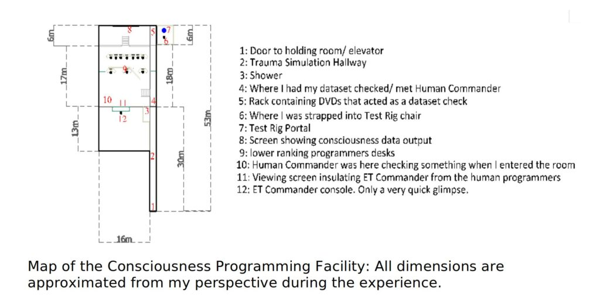
I am putting in a formal request to the Commander that the Domain keep me updated on any missions carried out into these non-physical locations by either them or their associates, via MM if he so allows it, or personally if that is a more appropriate course of action for them.
This is understood and agreed to. -MM
I am also requesting any aid the Domain may be able to provide to either myself or SD that would prevent both physical and non physical forces impeding us in our operations to further gather intelligence via lucid dreaming and astral projection based avenues.
I believe this a fair compensation for the information contained in this report, though I will let MM have the final decision in whether it is or not. If he disagrees I won’t argue.
From what I understand, they will remain neutral for the most part, but will assist (if they are able to do so) if asked by one of the irregular assets directly (though the means I have provided.) -MM
If, however, the Domain are able to provide such assistance I will be able to more effectively devise an offensive stratagem into these targets.
It is my intention to penetrate deeper into these facilities when opportunity allows for it regardless of the dangers present therein. Understand this is a lifelong goal of mine that I have held since long before even stumbling across MM.
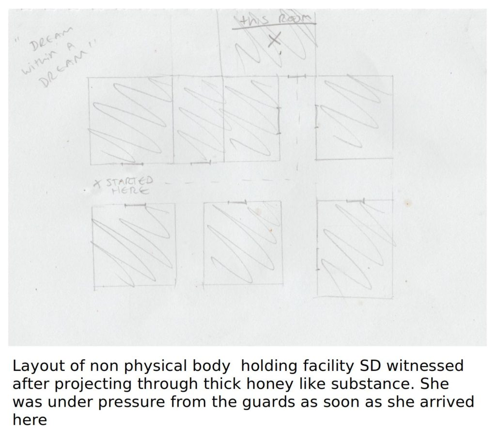
It is not my intention to disrespect the Domain or offend them in any way shape or form. Like MM, I take these assignments seriously and the terms I have laid out are solely to protect aspects of this operation I know to be on track to dismantling the amnesia mechanisms.
In saying that, I am committed to combining resources and using my LD skillset to tackle the amnesia problem whenever possible.
This is understood and agreed to. They will provide "reasonable" assistance provided the request is "reasonable". They will NOT make a judgement on the need or utility. Instead, in this venue "reasonable" refers to their ability to do so, given the specific circumstances involved. If that makes sense. To put it in my own words, they will help if they are able to, and will not judge if whether or not you need it or not. They have limitations. -MM
.
The Experiences:
Reality brainwashing is a very heavy theme present within many of these combined LD experiences, and is suggestive that the amnesia prison system has indeed been taken over or is still in operation and in some parts functional at the very least.
The Amnesia operation is either still in operation, or has been taken over by other interests. -MM
Over the years both myself and SD have been able to gain a detailed understanding of how these non physical locations are linked via a substantial network of egress portals and consciousness mazes, which are seemingly buried in layer upon layer of non physical “realities”, or planes exhibiting a different density to our physical one.
The conclusion we have both come to is that this system is designed to disorientate many consciousnesses during sleep/ death and control them to a very, very high degree through an MK Ultra type arrangement.
We have also gained an understanding of how consciousness doping agents are seemingly being used to keep a consciousness docile, submissive and under control whilst in these non physical facilities.
My experiences with the Elder Guardians suggest this is done en masse to the population of earth whenever they go to sleep, and again highlights this consciousness brainwashing theme that suggests the prison system is still in operation.
Given what we have experienced first hand, it is unlikely any consciousness would be able to resist this domination without some form of assistance, as the doping agents appear to be administered immediately upon entering the non physical environment.
"...it is unlikely any consciousness would be able to resist this domination without some form of assistance..."
Any efforts at “evading the light”, in my opinion, would have to include some kind of therapy to be administered during physical life to help break through that consciousness doping I assume is also undertaken upon death. I will submit a plan to MM later on I have to help rectify this particular problem.
"...Any efforts at “evading the light”, in my opinion, would have to include some kind of therapy to be administered during physical life..."
The volcano island I infiltrated which was recently mentioned in the LD task callout by MM was only one of what appear to be many places where such reality brainwashing/ false memory implantation, breeding programs, consciousness doping, and torture is taking place, according to mine and SD’s many recon assignments.
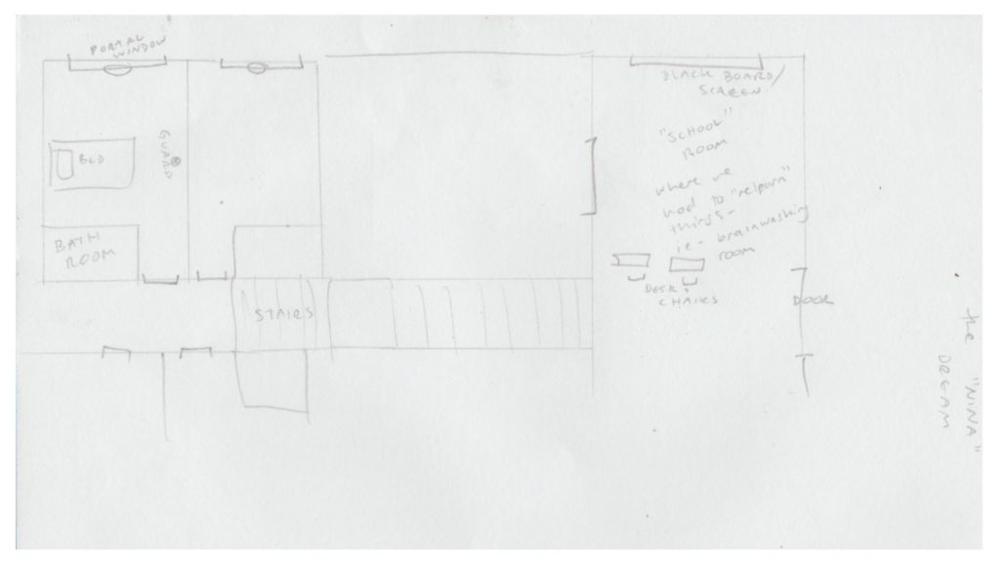
Many of these facilities take the form of “schools” – and are called this by their administrators – that are heavily guarded by armed soldiers that exhibit a very Nazi SS Officer/ authoritarian like behavior.
They call the act of undergoing brainwashing to “go and study”.
These schools exist within multiple different planes; it is exceedingly difficult trying to pin point them to a specific one.
The general theme is that if you get caught conducting lucid espionage into any of these locations, with complete memory of the physical world, you get targeted for either…
a) ejection from these locations by these guards or
b) capture whereby a specialized form of torture tailored specifically to make you forget them is administered.
This torture involves the use of electrocution and being probed with sharp objects, sometimes the former being administered through the latter.
It is strictly forbidden to talk about any of the other non physical worlds whilst in these reality brainwashing schools, and anyone doing so is immediately reprimanded and hushed by these guards.
This includes those in which past life memories begin to surface.
Those who are not part of the administration are treated like typical prison inmates and segregated into small groups based on gender and age.
Given that myself and SD were able to relate our LD experiences to each other on an almost day to day basis, we have been successful in retrieving memory of such scenarios that otherwise would have been left erased.
One of us will begin with a description of the experience, which will trigger a flood of memories for the other, who will then finish the scenario with an exact description of what took place.
Hence it is unlikely, in my opinion, that we are just implanting false memories within one another. It is my assumption that we are recalling parts of each other’s lucid dreams that we have both been active in.
It has been very evident to the both of us that the administrators of these locations do not want us aware of them or bringing such information back to the physical world.
We have experienced many failsafe mechanisms to make sure this doesn’t happen, including [1] amnesia “street lights” (designed to keep certain sections and blocked from access), [2] swarms of entities that “scrub” particular locations to keep out non authorized “visitors”, as well as [3] being chased through multiple worlds by entities resembling “suits” or “MIB” (specifically to stop one of us helping the other regain our memories).
I have yet another LD Asset {#3} part of my contacts who has also been chased by the MIB during LD.
SD and I have been fortunate in that we were able to evade and escape most of these efforts to some degree due to our LD skillsets.
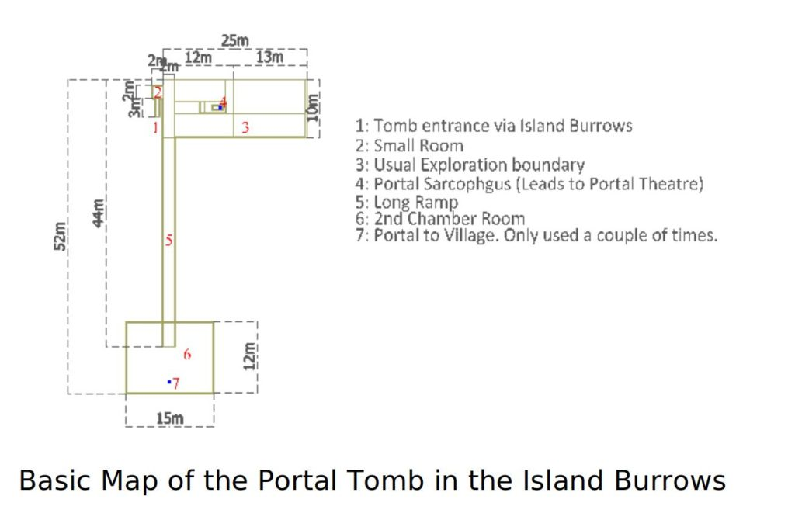
Unfortunately for the administrators of these locations we also both started building up a tolerance to the consciousness doping agents being used on us, which I believe was in part due to help from our handlers.
We started regaining a level of control of our consciousness whilst doped, which allowed us both to view the processes of what takes place under the “care” of the prison administration.
It should be noted that the assignments undertaken by us and mentioned in these documents were extremely psychologically demanding; these were extremely distressing situations we found ourselves in that tested us to the very limits of our mental resolve, even with an awareness of our physical bodies and a higher awareness of the non physical planes.
At no point should anyone ever try to replicate any of these experiences whilst in LD without proper psychological preparation.
(In our case) We had help!
It should also be noted that SD has undergone the same astral body tampering the night after the Domain Commander first opened up a comms channel with MM (the same night I underwent mine – it was the exact same procedure; it felt like something was being “welded” into our astral bodies).
She also has a history of interaction with other non physical entities whilst in LD, and has been able to operate from a similar state of higher consciousness as I have previously mentioned.
Her forays give a bigger picture of the block put in place to control consciousness at death.
Given the nature of our assignments, it seems that some of these locations are home to non physical refugees trying to escape capture of some sort, presumably by the earth prison administration.
They inhabit worlds that could be considered less than third world by today’s standards.
According to what has been told to SD by some of these refugees, the displacement of them is due to a large scale non physical war that happened many thousands of {earth} years ago.
The premise of this war centers around the idea that those in charge of these facilities are trying to create “astral super soldiers” by taking the best attributes of certain “races” and splicing them into a single being.
This astral splicing is what I refer to as the “breeding programs”, as it corresponds with SDs experiences in the rape camps, again of which there appear to be many of these camps in active operation ruled by guards that exhibit a very similar behavior to that of the Nazi’s.
My own experiences suggest something similar and that there are special assets who can operate outside of temporal tracing apparatus; ie chrononauts that can slip through the non physical planes without being monitored by even the most technological advanced species.
I suspect these are what I call “suits” or MIB and specifically target anyone who exhibits high navigational control of the non physical planes via LD? AP. If they catch you, you instantly wake up back in the physical world.
In the context of MM terminology this would equate to those who can initiate an MWI slide at will without having to worry about sticking to certain pre birth/ master templates; they are ghosts that leave no footprint of their non physical travels behind.
I suspect whoever made them is the same faction who has taken control of the earth prison.
I also suspect these “suits” have something to do with the Psaigreen. Any information the Domain can supply on that particular group (the Psaigreen) would be much appreciated.
It is on the list -MM
The methods of astral body tampering used to create these super soldiers SD and I have witnessed so far are:
.
- Similar non physical body splicing techniques employed by the Domain but without the intent to escape the prison
- Forced sexual interactions between heavily doped male and female captives. Males are injected with a secondary drug that amplifies their primal instincts to the point that they become incredibly violent and aggressive.
- The removal and implantation of foetuses within the womb of pregnant and non pregnant women.
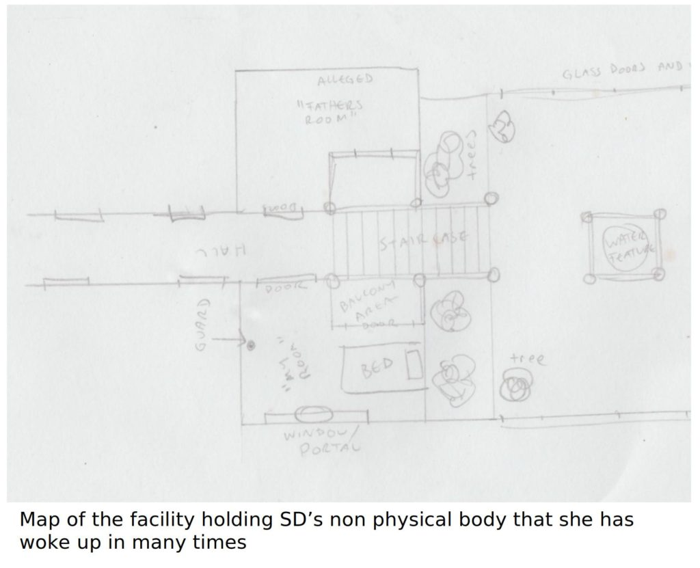
The idea in all cases is to create hybridized offspring with DNA containing the best non physical traits so that access to certain non physical areas may be obtained.
It appears astral body DNA acts as a key to certain non physical areas.
The Main Facilities:
While the locations mentioned in this document are numerous, there are several facilities that stand out to me as being important to keeping up with the consciousness brainwashing agenda that I suggest the Domain pay particular close attention to.
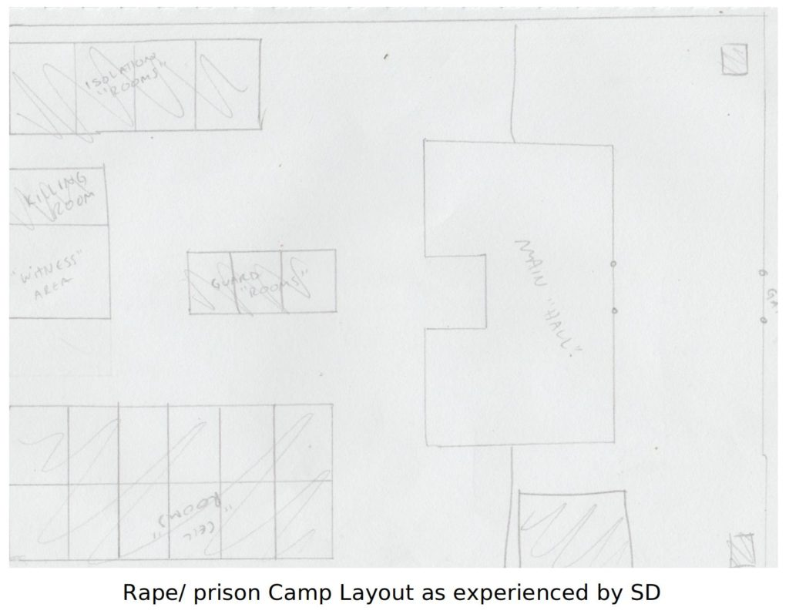
The most notable for me is the facility I was able to gain an understanding of during my last experience with the Elder Guardians.
This was a facility run by a military faction at the ultimate direction of an ET Commander (possible Mantid or Mantid Prime – 10% surety) with human operators, specifically for programming and preparing consciousnesses for the Earth prison experience after they go to sleep in the physical plane.
Facility operated by (possible) Mantid Primes with human operator staff. -MM
According to the information given to me by the Grand Elder and what I experienced:
- The physical eyes are used by the operators of the facility to gain real time data of what consciousness is experiencing whilst engaging in the physical “reality.” This data is then used to smooth out any bugs in the program they expect the consciousness to follow.
- When a consciousness memory cache approaches full, the programmers issue a command to “send it to sleep” in the physical plane. Eventually the consciousness gives in and goes to sleep.
- At the same time it is heavily doped with the doping agent to keep it in a very zombie like state.
- Whilst under the influence of this anesthetic, the consciousness will be transported into another non physical body that is kept within, I assume, a holding room in some kind of clear gel like substance, completely naked.
- This body will then wake up, still completely under the influence of the anesthetic, and still in a zombie like daze with two guards at the ready.
- These two guards escort this body containing the doped consciousness through a thick, sideways opening steel door and lead it down a metallic hallway about 30m in length.
- As they are walking, a 3D holographic environment is broadcast around the consciousness. Spatially, the room is no longer two walls separated by a distance of a few meters, but an entire landscape dependent upon what the programmers desire the consciousness to experience. The doped body is then led through several extremely traumatic scenarios designed to keep it from recognizing where it is and to keep it holding onto the idea that the Earth based physical reality is the only one. The trauma part of the simulation is completely erased from memory. I am unsure if this simulation takes place entirely in the mind of the subject, or if the hallway itself aids in this holographic environment. I assume at the very least that the hallway communicates directly with the consciousness in question via wireless means.
- The doped body is led back out of the simulation. After it is switched off, the two guards then lead it to an alcove next to the door at the other end of the hallway that acts as a decontamination chamber. The naked body is then showered and scrubbed free of the gel substance before being led through the second door, still naked.
- A team of consciousness programmers – between 10 to 20 – analyses the reality dataset of the consciousness in question using a room full of computers. This is a monumental task with several days worth of downtime while new programming is coded to allow for consistent integration back within the physical reality. I suggest watching the series Westworld as it is an extremely accurate portrayal of what I experienced (I had an LD of the first episode a few years before it came out).
8.a) During this downtime period the doped body is kept under the influence of the anesthetic and is very closely monitored by the two guards who become its personal handlers. It is allowed out of the facility to be used for slave labor until the coding for the fresh programming is complete, whereby it is brought back in.
8.b) Special cases where the dataset reveals inconsistencies detrimental to the consciousness containment operation are examined on a case by case basis, by the 2IC Human Commander. In my case I wasn’t allowed out of the facility, but was instead led straight to another room containing a chair with an egress portal into a physical reality that was in its very first stages of design. This physical reality construct was called the “Test Rig” by the Human Commander, and I was brought here because the Commander noticed I had been talking to someone (the Grand Elder) “off record”, ie without it being logged in my dataset. - The doped body is usually then led back through the metal hallway and made to undergo another trauma simulation before being led directly back to the holding cell where it is put to sleep and consciousness is then transported back into the physical plane body in preparation for “waking up”. I was directly told/shown this by the Grand Elder.
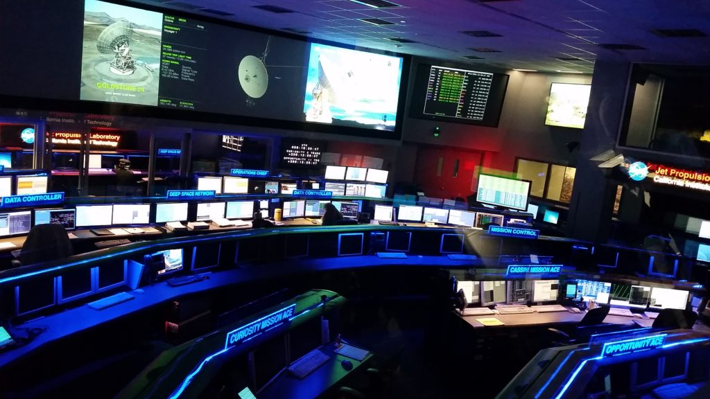
Original image provided by DM was unable to be extracted, so I substituted this image instead. They are both very similar. I do not know why I was having such a difficult time extracting the original image. -MM
Notes:
The programmers of this facility hold information on how non physical bodies can be programmed to interact with multiple physical reality constructs. I suspect the human Commander also has access to other similar facilities.
There are about 10 computer terminals in this facility that are used specifically for these programming purposes. These computers are able to directly interface with consciousness and hold extremely valuable data.
The ET Commander is kept insulated by the human operators by a viewing window that separates the main programming room from the ET’s own personal space.
I do not know if other ET’s were present in this room as it was a very quick glimpse gained in my peripheral vision whilst under heavy doping.
It could also be a bullshit memory.
I would assume that this ET Commander is in charge of programming the physical realities whereas the humans focus solely on consciousnesses coming in and out of the constructs, but do not quote me on this.
My conscious awareness kicked in after coming through the door that led to what I assume was the body holding room, in the middle of a trauma simulation so my recollection of the hallway is foggy and confusing.
I have no actual recollection of the holding room.
I assume the doors I came through were connected to an elevator, but I cannot be sure.
There is also the question of entrance to the facility; I do not remember seeing any possible access ways in the main control room, which is why I suspect that an elevator system was at the opposite end of the simulation hallway.
If that were the case I would assume up would lead to ground level and down would lead to the holding room.
Otherwise perhaps the entrance to the facility was underneath where I was walking, which explains why I never saw it.
The facility itself was located in a world that seemed to be a direct quote of Airl’s description of an Old Empire establishment with allusions to Ancient Egypt throughout the city:
“Anyone who is not willing or able to submit to mindless economic, political and religious servitude as a tax-paying worker in the class system of the "Old Empire" are "untouchable" and sentenced to receive memory wipe-out and permanent imprisonment on Earth.”
These are the exact sorts of people who were being subjected to the Earth construct via this facility.
Others included those who were openly opposed to the Totalitarian regime of those politicians who were in power.
Question for the Domain Commander: Are they absolutely sure that the Old Empire has been eradicated in this sector of the physical/ non physical universe? Because intelligence gained from this experience alone suggests they are still very, very active. Going by Airl’s description of the Old Empire and everything the Grand Elder told me as well as what I experienced, I am apt to believe this was the Old Empire and not just a wannabe mimicking faction.
I will inquire. Initial response is that it appears that there is something going on that differs from the initial intent. This needs to be investigated further. It is easy to jump to conclusions, and assume that it is "Old Empire" operations still under the control of Mantid Prime, or that some (pro Domain) Mantids are working with "free" humans in constructing escape bodies for general population egress. Many questions remain unanswered.-MM
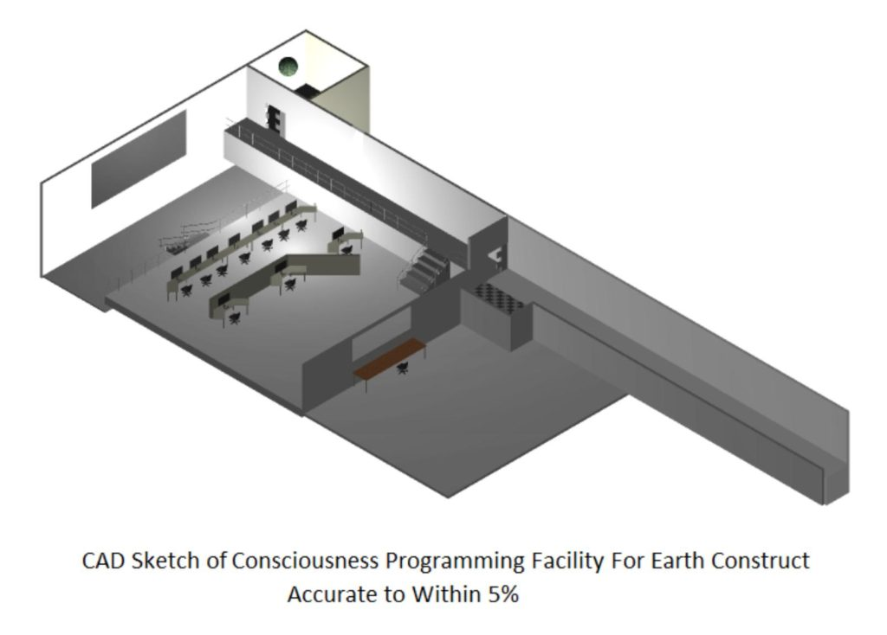
A very big effort on the human Commander and his programmer’s part was put into making sure I did not remember any of what took place in this facility.
The only reason I remember any of it was because the Grand Elder kicked me awake when the drugs started taking me.
He was telling me to take notice of the things I have mentioned in this document. You owe this section of this report to his insistence on making me pay attention.
Please tell him thank you from me. -MM
.
The Test Rig:
The server containing the Earth based physical reality appears to be contained within the Test Rig which is itself a VR construct within the consciousness programming facility .
This is in the form of a large “brain” that is made of Ethernet like cables.
These cables are able to extract consciousness data through what I equated at the time as being inductive coupling ( I am a qualified electronics tech, trust me on this assertion); they are wound as tight coils that pick up the magnetism coming off conscious thoughts contained within the server and direct this energy back to the military controller’s mainframe in the form of real time {analogue} data.
Think of this like joining an online gaming server; each player must log on to the main server through their various consoles.
The AI brain in this case is responsible for the load out environment the players all synch into; their consciousness require their own consoles in order to “play” and are thus kept off site, somewhere else.
My guess is in the holding rooms or back in the programming facility with the Human and ET Commanders.
This server brain is housed within a building surrounded by large glass windows on its ground floor on the cusp of what appears to be a university campus.
There are freshly manicured lawns and gardens in the center of various multi story brick buildings.
Through awareness of self, I was able to destroy majority of this campus.
The tell tale sign of this building is the logical fallacy of the platform one has to furs reach via the stairs to use the lift, instead of just having it pop out on the ground floor.
The brain itself was large enough to need an entire room and 1st story platform built around it.
Below this building is a compound that holds the bodies in the Test Rig that are still asleep and engaged in the Earth construct; I watched as two of them came out of the lift still in a dazed state, one of which was SD.
Unlike others who have to be plugged back into the construct to get back to their Earth bodies, I came back of my volition by summoning my own portals via LD – this meant I bypassed the programming/ trauma simulation stage altogether and is why I remember it so well.
I can walk the Domain through the whole process from the programming facility, into the Test rig portal, out the front gates of the accommodation section, through the university campus and into the Brain server building easier than I can get up to take a leak in the middle of the night; My memory of it is photographic.
The Test Rig reality construct is where the human Commander plans on migrating all consciousnesses from the physical Earth construct when it is complete.
Although no ETA was given, this was the entire reason for the development of the Test Rig.
I overheard the Commander talking to his programmers about it.
Not only overheard; he was standing right in front of me when he said it, and assumed that I was too doped to remember any of it.
I wasn’t.
I was 100% aware of everything going on around me courtesy of the Grand Elder.
This is probably the most solid intel you will get off me.
Domain Commander take notice; there is another prison construct specifically being prepared for when the Earth prison goes offline which already has some value asset’s consciousnesses uploaded to it.
They are aware that the Earth Prison is part of a much larger Prison Complex that involves multiple solar systems. Though this intel about a backup facility being constructed is new intel. -MM
.
SD’s Experiences of the Non Physical body holding facilities:
Although this was not a shared experience with SD, she has awoken to very similar experiences of manipulation whilst doped, and has described similar egress portal setups like the Test Rig.
Her experiences of these facilities are much more persistent than mine.
The main difference is that in her experiences these egress portals are coupled to standard “hospital” like beds, whereas with mine they are coupled to something more akin to an upright dentistry chair.
SD has had many experiences of these facilities of which she is of the belief that there are at least 3 separate ones in operation.
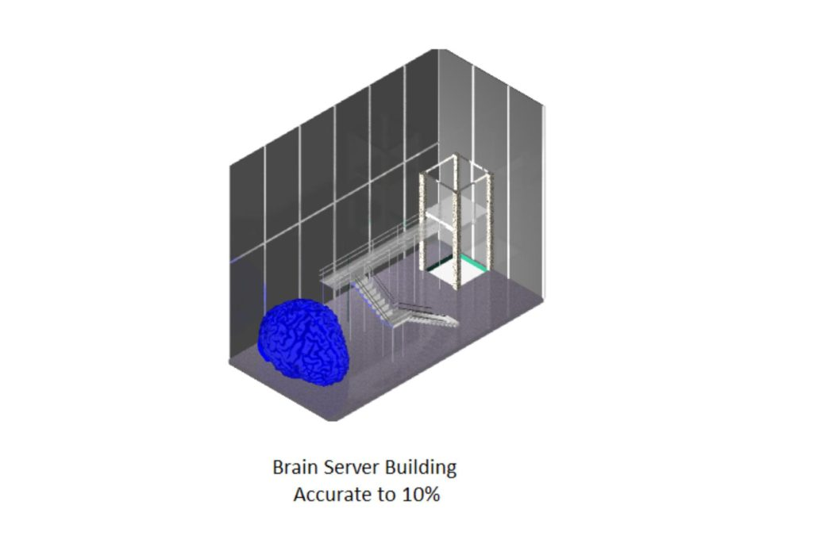
One of these facilities is found within the Medieval Village world which can be accessed via the portal network found in the burrow tombs of the Island World.
SD’s recon assignments suggest that one of the main operating facilities can be accessed via astral projection from a lucid dreaming state, after moving through a substance/ plane that feels like “thick honey”.
On the other side of this thick honey bubble is one of these brainwashing facilities set out similar to a hospital rather than a military war room.
Immediately upon entering this area, guards will hunt down any unauthorized entity and eject them back into in the Earth construct.
I have also been taken to a similar hospital by black ops soldiers in a helicopter during a combined lucid dream with SD.
This particular hospital backs onto an ocean.
About a kilometer up the beach are various café’s and restaurants and an old style town nearby Brainwashing School I retrieved SD from moments prior to my initiation into the Unseen 5 (Combined LD Experience).
The retrieval of Nina Bejowski, as mentioned in my part 3 was also experienced by SD in one of her LDs (she was Nina).
In the experience I had to retrieve her from one of the brain washing schools whilst being hunted by “suits” who exhibited abilities that again suggested world line tampering in an effort to keep our consciousnesses contained.
Whilst I do not remember the layout of that particular facility, SD does.
Note her apparent “father” appears to be in control of at least one of these facilities (the one beyond the honey substance), and was present in this particular school telling her she needed to study.
Portal Theatre:
The most substantial location visited by both myself and SD is the portal theater.
The reason this location stands out is because it appears to be an egress portal hub that connects most of the non physical locations mentioned in this document.
I have personally undertaken many, many infiltration assignments into this complex, as has SD.
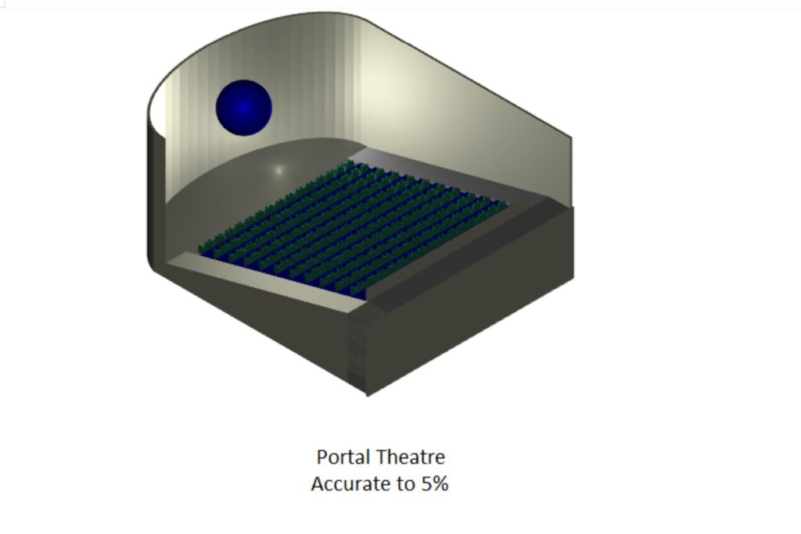
These locations do not change, despite coming here at different times of the year; room number 7 (or 8?) on the right side of the hallway will always take you the “Ancient Marketplace”, for example. I know this because this is the room I always took, and was the place I always came out after traveling through the portal in this theater room.
My assignments never bothered with any of the other rooms, as far as I can remember.
The rooms themselves look like standard movie theaters, though instead of a large projector screen they have spherical portals – about the size of a weather balloon – that float about 6 or so meters from the floor, roughly halfway to the roof.
The portals seemed to be contained in some sort of liquid substance and protected by an invisible “maze like” barrier; you cannot directly access them (well, the one in room 7 any way) without first navigating through this maze.
You “swim” up into the maze until you get to a point where your consciousness is sucked into it, and you come out into an alternate world on the other side, in my case, the Ancient Marketplace.
The band Primus has a live gig DVD called Hallucinogenetics with spherical TV screens on its cover that are very similar to what the spherical portals in the theater room look like.
Please refer to the picture at the top of this article. -MM
SD is confident in her assertions that these portals are used for reality brainwashing; she has witnessed consciousnesses being forced to “watch” things on the portals (which can function like spherical TVs) equating to false memories before being pushed through them, and has memories of it being done to her.
This is essentially the exact same process carried out in the other facilities.
I have broken memories of similar things being undertaken, though they are no where near as vivid as SDs memories of this place.
My most vivid memories are that I come to the Portal Theater from another place, usually the Island, am escorted down the hallway to room 7, in which I project into the portal and come out in the Ancient Marketplace.
I then have to find another portal in the Ancient Marketplace which brings me out into “The Village”, which can also be accessed via the Island Burrow Tombs.
For me, entry into the Ancient Marketplace portal always felt “necessary”; whether this is a result of being forced to think that or whether it was an intention placed there by my handlers using me as an infiltration asset, I am not sure.
Travel into this place always brought me out into the foyer in front of the hallway, in which I have a hazy memory of being led down the hallway.
My memories of utilizing portal room 7 are quite vivid, however. I know a lot of other things went on here which I cannot remember; unfortunately the only recording of these experiences I had was on a laptop that got stolen.
There is no such thing as coincidences. MM
This laptop had crucial information about intelligence I gathered here. If the Domain are serious about dismantling the amnesia/ hypnosis machinery, I would suggest directing a large portion of whatever resources they have allocated for this operation into finding this theater as it will give them not only direct access to many of the other locations, but also a very good idea of the different hypnosis regimes used.
The Island:
This island is similar to the Volcano Island in my last Domain assignment.
I am not sure if it is the same one.
I have no recollection of there ever being a volcano/ slave set up.
I believe it is a different place entirely, going by the memories of it that I have. It seems to be quite neutral ground.
For the most part, whenever I am here it is rather benign and doesn’t seem to hold any negative operations of any sort.
It has not only been confirmed by SD but also by a third LD asset {#3}.
LD egress always brings me out into a dense forest, or at its edge on the shoreline.
This forest has a myriad of pathways that twist and turn through it.
The sky is always purplish maroon, like it is stuck in evening twilight. In the middle of the forest are certain trees reminiscent of Morton Bay Fig trees with huge roots at their base, but more palm tree like at the top.
Underneath these roots are what appear to be animal burrows leading further underground.
They are barely wide enough to fit me in them.
Upon going into these burrows one soon comes out into a tomb lined with precision cut bricks.
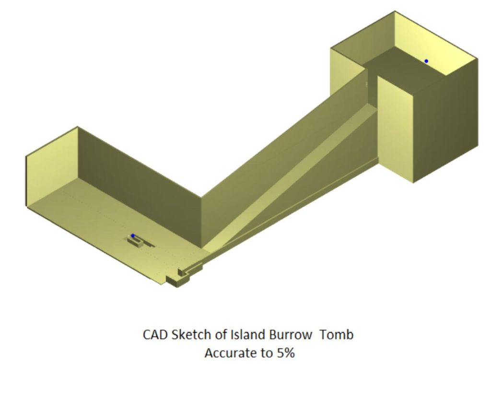
This appears to be a sort of small chamber coming off the main room.
As you go out into that main room, to the right is a ramp leading to a much higher level (suggesting temporal displacement from the outside of the island, as it should surely break through its surface, but doesn’t).
To the left is a sunken level by a few feet containing a sarcophagus, and in that sarcophagus is a portal that leads to the Portal Theater or the Medieval Village depending on how it is used.
There is a stairway or ramp to the right of the sarcophagus (when viewed front on ) that I believe leads to another portal.
It is likely this portal is the one that leads to the Village.
I am recalling things from over 10 years ago, so correct memory of it all is hazy.
To one side of the island is a fenced off beach, and on the other side of this fence is a military like naval shipyard.
This shipyard consists of what appears to be a very large shipping container like building.
The shipping container is slightly back from the shoreline and has a concrete path the width of a road next to it that leads out into the water just in front of it, in the form of a jetty.
Back at the shipping container is a crane like device that is used for working on the {aquatic/space} ships here.
Further left there is something hidden in the water next to the concrete jetty; it is either a squid like monster or a similar looking space ship.
This same monster ship/ thing has been corroborated by LD asset #4, who is in “agreement with the consciousness evolution plan“ based on his own experiences in LD.
This is a VERY important ship; New tech that could do some cool {non physical} shit that very few people {both physical and non physical} know about.
SD suggests just back from the shipyard, on the other side of the fence we have a house, and that she has memories of me working in the shipyard at the very point where the ship is docked.
This explains why I remember it with no actual memory of stumbling upon it; it is just something I “know” whenever I come here, like knowing you own a certain type of car.
According to her, there is another section of forest on this side of the island with more burrow portals she has also undertaken.
The fence line itself protrudes from the shoreline close to the shipping container on its right hand side (when facing the ocean) several hundred meters back into sand dunes.
The sand here is quite a deep yellow color, and very coarse.
The fence itself is very high, probably about 10 or even more meters, made of typical chain link.
.
Notes:
Given the Island is a somewhat neutral place with seemingly minimum life activity and that it has egress portals that lead directly to some of the consciousness programming facilities, I suggest it be used as a “safe” insertion zone for any offensive efforts targeting these facilities.
Although there may some intermittent activity on the coastline the closer one comes to the shipping container, the forest from the middle towards the other end of the beach can be considered quite safe (at least it could be the last time I was there.)
This place is my second home; I frequented it a lot in my youth; it is probably the most tame place out of everything I experienced.
Gentle request by me to the Domain: PLEASE DO NOT FUCK IT UP.
.
Ancient Marketplace:
The main identifier for us is a road the width of the great wall of China, maybe even wider that curves up toward the sky in font of you.
As you move along this road, gravity changes so that you always feel like you are just walking through one axis, not two; it feels like you are walking on a flat surface.
There is always a festival here of some sort; my assignment thus entailed coming out of the portal, then walking the curve to its peak, through the crowd of festival goers whereby something strange would change their mood and see them running out of sheer terror.
This was a constant, repetitive scenario that I experienced for over a year, almost every week directly coming out of some very heavy “work” in the portal theater.
Something very weird was going here; whatever it was has been blocked from my memory.
It involved “timeline resetting”.
Very curious. -MM
Many of my assignments here involved an underground tomb (much smaller and cramped than the one at the island) set back from where one “appears” here a good way, which had yet another portal in it.
There was always some very strange things going on in this particular tomb as well, and I never really liked being here.
It was always very cramped, the passages being only 3 or so feet square.
Whilst lucid, I don’t like being confined to spaces where I cannot turn around easily; this tomb was very much like that.
Going into these confined places, you are just asking to be captured by something.
It feel likes you are a rabbit purposely walking headlong into a trap designed specifically for that creature.
You have to fight every ounce of your being screaming at you to turn around and get out.
.
The Village:
The portal in the Ancient Marketplace tombs brings one out into an old medieval type village SD and I have {again} both been to.
"Instead of thinking that this is a "Medieval village", perhaps you should consider it to be a typical community located on one of the planets of the "Old Empire". The descriptions seem to match with what is currently presently found there. The only difference is that most of the current "Old Empire" communities have a far wider variety of creatures that inhabit the area, not just humans." (Note from the Commander.) -MM
It has also been corroborated by LD Asset #5 who has also been here.
There is a cluster of old derelict buildings where people dwell.
This is a place that is constantly undergoing a “timeline reset”.
It is a nice old town which is ruined by the trash these inhabitants leave everywhere.
This cluster is where the “mind mazes” start.
There is a building complex several stories high that has a bituminous road next to it that somehow slants from the bottom to its very roof.
A pink watery like substance covers the ground everywhere that seems to reset ones consciousness if it is touched, in which they then exhibit a high dose of amnesia.
The main townsite is set a level above this water, by several feet.
It feels like a nearby river has flooded the area and has covered everything surrounding the village at this low point with knee high water.
There is a sort of circuit through town one is led to taking upon arriving here.
In my assignments I knew an invisible “something” was resetting the timelines, but I couldn’t catch it.
It wasn’t until I did the circuit in reverse (reversal of time), back through the building that I was able to “see it” and finally put a stop to the resets.
It was not something I can describe with earth language. I believe this thing, whatever it was, was tampering with the MWI in this location as well as the Ancient Marketplace.
Over the watery substance, joining the buildings, are these glass like tunnel walkways.
Littered about are several shipping containers in the pink water that lead to different locations; the only way out of this area is to project consciousness onto the shipping containers and use them in a sort of leap frog manner.
None of the inhabitants here possess such abilities.
SD has recollections of the watery substance and the idea the village in general is linked to the consciousness mazes.
She has met her dead cousin here several times, who has told her that the watery substance disallows the dead to interact with the physical world; the physical world exists somewhere far beyond it, and SD’s cousin has very specifically mentioned the inhabitants of that world “know about us“ who are still alive here in the physical world.
The inhabitants of this world seem to hold a certain level of disgust for anyone who can project here from the physical world; several times they have mentioned such disapproval to SD’s cousin, who simply told them she was “special”.
Think of this like a rich man turning his nose down towards a homeless man: the discarnate consciousnesses of this world fucking hate us LDers like we risk bringing a plague unto them.
Again, the notion that this community is part of the existing "Old Empire" that is desirous of shunning felons from their community. -MM
One of the buildings near the road that slants to the top of the building complex is set out in the form of an old hospital building.
This is where SD has awoken several times under the influence of the consciousness doping agent.
In these cases she has been lucid enough to remember her body back on earth, and to realize that something is not quite right.
Unable to gain control of her lucid body, she is then walked through the complex by several guards who do not realize that the consciousness doping agent hasn’t completely knocked her out.
She has accidentally acted too “coherent” and lucid to which a guard has then poked with a sort of cattle prod to keep her dazed, though she has still been able to retain memory of the event.
There is an elevator they take her to which leads to a higher floor of the building, and upon coming out of this elevator one enters a room with many beds crammed into it.
Attached to each bed is a sort of screen used for reality brainwashing and to instil false memories.
The process is that the hospital patients are lined up, single file, in which they are administered with a heavy dose of more of the consciousness doping agent then “strapped” into these beds to undergo “study”.
SD’s description of the brainwashing process is very similar to what I experienced with the Human Commander.
So this facility is at the "old medieval village"? -MM
In other instances, SD has appeared in the town, met her cousin and walked with her to the hospital building where she has intended to go into it to “retrieve” someone {possibly me}.
In these particular experiences, several other people, including SD’s cousin, have been aghast at the idea of going “back” into this hospital as everyone here knows what it is used for, including her dead cousin.
As a sidenote SD has also met her cousin {the same one} in a waiting place that seemed to function as a sort of astral quarantine for the newly deceased to wait whilst being processed before they are allowed to pass through to such worlds.
SD mentioned this as being a sort of field free floating in the middle of nothingness or space.
SD’s cousin was met by another long deceased family member that acted as a mentor reminding her of participation in past lives (possible mantid).
Again, SD was met with great disgust by the other deceased who were awaiting processing, as they (current earth incarnations) are apparently not supposed to venture into such places.
This makes sense. If the "old medieval village" is a facility on an existing "Old Empire" planet, then The Domain should be able to identify it, find it, and render it inert. I would suggest some questions to ask to the commander about this subject to flush out the details. -MM
.
A Glimpse into Death:
SD and I have a combined experience in which we were both killed at gunpoint, along with many of our friends in one location (a house in what appeared to be a European place) and both “awoke” in a completely different reality where we were incarcerated in a sort of prison.
I can remember quite vividly that this was an instantaneous “switching” of realities.
After the bullet entered my head, my consciousness detached from that body, dropped through the earth and entered a portal before coming out quite a distance above the already established (middle aged) body in the prison compound.
My consciousness then “fell” from the sky into this body at great speed in which I gained complete control of it.
I retained complete memory of the world I had just died in and everything that had happened with us all being killed.
SD didn’t undergo this complete transition; as she was shot, she blacked out before awakening in a room full of our friends from the house who no longer seemed to recognize her, with complete memory of the previous world.
One minute she was there in the house, then everything went black as she was shot, before waking up.
This is where the guards became hostile when she tried telling these people they had all just been killed.
She was reprimanded then taken to a separate torture room for being too “rowdy”.
I was in a different part of the compound to SD, but again I was surrounded by friends from the world I’d just come from who no longer recognized me.
When I proceeded to remind them of their deaths, they were quite shocked and terrified as the memories started coming back.
After asking where SD was, they told me she had been reprimanded by the guards for not abiding by their rules.
The part of this compound I was in was an outside area very close to bushland. It reminded me of where I went to high school.
This outside area had been divided into certain sections by invisible walls or barriers that seemed to be arranged in circles and squares.
The entrances to these areas were blocked by guards. One would have to walk up several steps over something that reminded me of a nearby pipeline.
You could, at times, be standing right next to someone and they would be in a completely different section.
When I got here, SD was in one of these other areas that I had to navigate through.
Her experience started in a separate small room similar to one of our old classrooms.
After being reprimanded by the guards, she was then led down a hallway next to a grassy section to another room where she was electrocuted and tortured via sharp apparatus in which she would then black out and wake up back in the physical world.
She has multiple memories of being in this torture room, suggesting she has been here more than once.
We have identified a possible insertion point in SD’s childhood where we believe her consciousness may have been migrated “here” similar to how mine fell into my body, after she woke up with no memory around the age of 4.
She remembers waking up at her grandma’s house with no memory of any of her family.
SD suggested that the only family member she even vaguely recognized in the slightest was her brother.
These memories didn’t return for some time; she had to live with an “unknown” family for almost a year, and pretend she knew them.
To me, this is proof that pre-birth templates are being bypassed in certain cases.
I would suggest these cases relate to the level of lucid control one is able to exhibit whilst in the dream state.
It is my opinion that if you get good at LD, you no longer get a template but are just flicked into another already established body upon death anywhere in the MWI.
Good theory and makes sense. This should also be investigated further. -MM
Question for the Domain Commander: do they know of any correlation between Lucid Dreamer’s an bypassing of the prebirth template arrangement upon death?
I will ask. -MM
.
Singular Assignments:
These assignments were only experienced by myself, but are relevant to this document.
.
The Consciousness Doping Facility:
The assignment task was to gather intelligence on a consciousness doping agent and what it was being used for.
It was carried out around 2005.
The infiltration team consisted of myself and two other males.
We were all in our late 30s/early 40s.
I am not sure if this was entirely a non physical event or not.
It is a possible memory of a past life lived during 1970s era based on the appearance of the other two team mates and weapons/ technology carried by us.
This was a “special forces” military operation and one of my first lucid assignments when I was still in high school around the age of 15/16.
The consciousness doping facility was located deep in the middle of a harsh desert reminiscent of Southern USA.
It was a military compound that was heavily guarded by armed soldiers.
It very well could have been Nevada, from what I have seen of it on the internet etc.
I remember I could feel the intense heat radiating from the sun.
The only way in was via a supply train track that cut through the desert for many, many miles.
The memory begins several kilometers away from the compound, far enough out to keep a low profile.
We had evidently followed the train track from the opposite direction, now we were stopping to discuss “the plan”.
Intelligence suggested a doping agent was being used here, but that is all we knew.
The plan was that one of us would fake a capture while the other two used the commotion caused by the capture to gain entry covertly.
We knew there was a high probability anyone being captured would be taken into the compound and administered with the drug we were trying to gain information on.
The idea was to get doped and try to keep tabs on what one could expect to experience whilst under the influence of it, as the other two figured out a way to exfiltrate out of the compound.
I volunteered for the doping.
The train came and all three of us were able to board it as it had to slow down for a security check or something; my memory of this part is hazy as very soon after that I was captured and everything went black.
I came to in a small concrete room in the compound, strapped to a chair but yet still almost completely out of it courtesy of the drug.
In front of me was a large standard projector screen and next to me was a trolley full of metallic surgical looking tools; you get the idea. I don’t know if there was anyone in the room with me or not.
I think there was.
The next thing I know my team mates had busted through the locked door. One of them rummaged through all the cupboards and the tray of tools while the other unstrapped me.
They helped me to my feet and I think they must have put me on a gurney and wheeled me out.
Somehow we were able to escape.
My memory is hazy but I think they pretended I was dead and that they were part of the clean up crew.
I have a vague recollection of being debriefed afterwards by my handlers.
.
The Super Soldier Program:
The assignment task was to gather intelligence on why an “enemy” faction was altering characteristics of non physical bodies. It was carried out around 2008 – 2009 by myself with my handlers monitoring the entire event using my eyes as “cameras”.
It took the form of a double layered lucid dream. In other words, a lucid dream within a lucid dream.
Luckily, I had thought to email myself a copy of my dream journal since losing my laptop. Note, that this was several months before my encounter with the All Being and the Unseen 5 and hints at my thoughts on all this at the point in time:
15/05/2016
This morning had a dream where I appeared to be sleeping (dream within a dream). I awoke (in the dream) to my body under going immense torture as something was electrocuting me. It was as if whoever it was that was doing the torture had stuck metal probes deep into my {pectoral} muscles and were administering the electricity directly into my blood stream. I remember the pain was so bad that it seemed so real, and I thought I had indeed awoken, as SD was lying next to me asleep in bed.
The electricity was coming in bouts of several minutes, and each time they stopped I remember falling back asleep (dream within a dream). When I was in this dream within a dream I remember talking to somebody about these apparent Super Soldiers that had been made, or were currently in development. I was told that what makes these soldiers so important is their ability to travel through time and that they had a very specific activation sequence that required several sequences of events to occur in a precise order {ie a sequence of MWI slides}.
The person telling me this likened these super soldiers to a send and receive email program (I think he was talking about the overall way these soldiers are activated) whereby a packet of information contains within it a sort of code specifically aimed at activating these beings, which they embed their activation status into the reply message. Once the original program receives this reply message, it scans it then activates a global code that sends all these soldiers to certain points in time simultaneously.
The most important part of these soldiers that makes them different to other time travelers/ chrononaughts is that they have been engineered so that when sent through time, no residual energy signature is erased from the timeline, making them untraceable.
I was told this has a lot to do with DNA and DNA memory, but somehow the engineers were able embed an external memory feature which makes the soldiers remember their tasks despite it no longer existing in the timeline (this is a major contradiction to time travel theory as it has been relayed to me, and as such what it means is that technically these super soldiers are not actually time travelers as they are not traveling through time, but more so circumnavigating it altogether.)
The person telling me this referred to these super soldiers as T1000s, Terminator reference. But I got the feeling they were a type of cyborg or trans-human.
I’m not entirely sure if this was “bad side” tech or “good side tech” and neither am I sure of the side the side that was electrocuting me, but I think the good guys were in the dream and the bad were doing the electrocuting, which would seem it’s possible the bad side were trying to pry this info from me.
If this is the case then it is possible such a mission has been compromised, but I don’t think this is the case as the torturing beings seemed to be getting angry that I wasn’t giving them desirable information.
What I think is that part of the activation sequence for these super soldiers is embedded in being tortured by the enemy, so that in order to keep secrecy from their own enemies they do not “know” anything until the faction in control of them triggers them, which is precisely when they are needed to time travel back to the beginning (like in my zombie dream).
It is even possible the good side, or whoever was telling me about the super soldiers, was purposefully electrocuting me because they knew it would activate me.
This dream reminded me of another one I had years ago here I was asleep (dream within a dream) on my parents bed and then had a wire wrapped around my neck which electrocuted me. I can recall having similar dreams over the years but I can’t recall much from them.
Is sleeping nothing more than a means of uploading information to 4th dimensional beings? That would make our fleshy bodies nothing more than a 3d reality monitoring program. If so, what are we monitoring? Sleeping should be a meditation point. Also these super soldier beings seemed to not be some sort of cybernetic hybrid, but the 4th dimensional equivalent. They essentially have parts of the time space fabric written into their DNA, but are a separate entity to it. This means they can always change their creation programming at will. Does this mean they are above the 4th dimensional (5D) or not? Also needs meditating on.
I have also been “given” keys and phrases by my handlers specifically to initiate consciousness time travel whilst in an LD. Note the date, again this was a few months before my All Being/ Unseen 5 interaction:
21/05/2016
This morning I meditated (about 8:30 am) to open my chakras using the usual method of ROYGBIVW for Base, Naval, Solar Plexus, Heart, Throat, Third Eye then Crown. After opening them I was given a very strong image of the Rune Othila at 12:30pm. I meditated on this Rune with A asleep next to me so that I would have projecting the Rune into the space that he was occupying. I remember feeling as though this Rune needed to be traced from the bottom left ending in the bottom right corner, and also realized that it is actually a 2D representation of the 3D way code is generated, ascending about 45 degrees at each angle. After keeping a consistent trace of about 2-3Hz I remember several numbers appearing below it that seemed like a code to unlock a safe. I am not sure exactly how many numbers there were, but I can remember the most vivid ones being 609, in red, within a square for each digit.
I started tracing Othila with these numbers at the bottom then the next thing I knew I was remote viewing from a DNA memory of long ago of a tribal woman in the midst of the forest with an orb dangling above and in front of her. She seemed to be somehow channeling power from this orb which appeared as lightning entering her hand, which she was holding up.
The next image I got was a flight of stone steps that appeared to be in the same forest. I remember thinking that the Othila rune must be used to stimulate memory or DNA memory in general, so on realizing this I asked if it could make me remember my time traveling key I was given years ago by a Tibetan monk {during meditation}, but threw out by accident. I was suddenly aware of another being I was talking to who was asking if my wife knew about this, to which I replied she didn’t. Randomly I was given another symbol which seemed to activate some portal/ stargate and then when I was not expecting it I was shown my time traveling key with a brief flash. At that moment SD came in to take photos of Aiden, and we could see a blob of energy on my side of the bed.
Consciousness Mazes:
Both SD and I have experienced the consciousness mazes multiple times, though hers have been from an outside perspective of it whilst mine were from within it.
I surmise they are solely for “entertainment purposes”.
They take the form of strange games or mini worlds one has to progress through to find a portal which takes them to the next level.
They are extremely confusing and often times have “cheat areas” that allow access to the next levels in other levels; you can progress through several levels only to run into a block whereby you have to revert to the lower levels and probe them for the hidden areas which allow access pass blocks at the higher levels.
Access to these hidden areas is gained by going against the commonly laid out “pathway”.
The catch is, every time you change a level, you lose all memory of what you are doing, and the crux of the game seems centered around trying to continuously regain this consciousness awareness that you are in this game and remembering the levels you have progressed through in order to find the hidden areas.
It seems that other “players” are collected as you progress through the levels.
I will start off alone in Level 1 and run into these players throughout the levels, then by level 4 there is a group of about 5-8 of us.
Of this group I know that they are all presently incarnated on earth and we have history in different “worlds” together; we all know each other in the non-physical planes and have been meeting in these games quite frequently.
I suspect these mazes are around 12 to 13 levels deep, but I have only ever made it to level 8.
According to SD there is no end to them.
The first couple of levels up to probably level 3 I have experienced numerous times in the exact same way.
There is an epiphany moment when you realize the correct way of navigating them.
After level 3, memory of the game becomes exceedingly difficult to regain to the point where the only way to progress is to work as a team and extract “clues” of the previous environments from each of the players.
In almost all instances, I am the one who initiates the first memory of prior levels which kick starts off others memories and from this we can develop a plan of how to tackle the current level.
The game itself is psychologically taxing; by level 4 cracks start to develop in the psychological disposition of the other players, and by level 6 people are proclaiming their inability to deal with it any longer and their willingness to just give up and go back to living in physical reality free from the memory of the games (think Cipher in the Matrix).
Another problem is that the players and their decisions affect progression through each level; it is as if a code is written into the way the scenario unfolds and only allowing it to unfold in the correct manner will unlock the portals.
The progression through each level for me is always the same.
I operate from a completely lucid perspective the whole time (upon regaining memory anyway).
The highest level I have reached is Level 8, whereby I have been convinced I am breaking my way out of a coma and that my real body is actually strapped to a chair somewhere in some kind of MK Ultra like torture chamber; I can almost see the room the chair is in – it appears to be the same room where I volunteered to be captured and doped.
Much of the training I underwent at the “Time Travel Towers” was specifically in preparation for these mind mazes; I have memory of completing that training and coming to this exact realization.
It is connected to the Portal Theater and my assignments in the other worlds, I am sure of it, though I cannot remember the specifics of this connection beyond level 1 starting at the Village.
I suspect what I am doing in these games is unraveling the brainwashing put in place at the Portal Theater.
The order of the levels, according to my memory of them, are as follows.
Level 1: Village Walkways
You start at the bottom of the building with the bituminous road next to it that goes to its roof.
There is a time limit.
I get the feeling something is chasing me and I have to be continuously on my toes. One has to try and figure out what is going on whilst constantly remaining vigilant about the environment and how to avoid the many traps and tricks lying about to ensnare them.
From my fragmented memory of the Ancient Marketplace, a similar thing is happening there.
If you get “caught” it is all over and you end up back in physical reality {possibly in a MWI slide}.
The goal of this game is hard to explain; it is like you have to progress through the glass walkways by projecting your consciousness into them, complete a circuit around the circumference of the village using these tunnels, before returning to the bottom start point.
This “opens up” a location that can be seen from one of the glass walkways that projects you into level 2.
Depending on where you move within the level, it completely changes the environment around you. If you consider the peak point of the bituminous road as pointing North, its valley pointing South, one must head off through the walkways heading East, then back around, in which they come back out at the roof of the building.
One must then follow the stairs down through the 3 or so building levels to reach the level above ground.
There is then a platform at the South East section of the building several meters away on a sort of embankment.
The only way to reach this platform is through projecting over it as it is not connected by a walkway.
This projection mechanism is one of the secrets to playing this whole game. It takes much training in learning how to use it properly, otherwise you just fall into the pink water that surrounds the area.
.
Level 2: Castle Room Pit
This is one of the smaller environments.
You come out in what appears to be a very grand hallway in a castle of some sort.
There are the typical stone bricks that line the walls and floor and other banners etc suggesting it is indeed a castle.
The room is quite large probably 100x1000m squared, maybe even more.
Behind you is a solid wall and the portal leading back to the Village.
In front of you is a chasm 10 or so meters deep, and filling this chasm is molten lava.
This chasm stretches from side wall to side wall and extends for more than half the room; the only method of crossing it is via consciousness projection.
From memory the key has something to do with the walls; there is a set of invisible platforms you have to project over and use as stepping stones to get to the other side.
On the other side of the pit is a door and through this door is a portal leading to level 3.
.
Level 3:
I cannot remember this level.
Level 4: River Embankment with Pods
We come out at a river mouth, at the waters edge.
Behind us the bank rises to a high wall that blocks any access back in that direction.
There is a small mud flap piece of ground that we are able to take shelter on.
The river extends out around us in every direction. On the bank in front of us there are several pod like things that are necessary to get to the other side of the river banks.
These pods must contain two people to operate.
The operational parameters are also linked via a hive mind arrangement; all players must be present in these pods in two man teams or they simply will not move.
By this stage, one of the men in the group is starting to lose it.
After being dragged through 3 levels of these consciousness mazes, being mind wiped and regaining his memory each time he decides it is simply too much for him.
He expresses his wishes to just give up and go back to physical reality.
This presents a problem to everyone else; we need his consciousness in one of the pods for them all to operate properly and get us across the river to the portal on the other side.
Some of the group try and tell him to calm down and help comfort him, telling him we just need to get to the other side of the river then we can think about his decision a little more.
It is evident they are all motivated by the need to cross the river, and that his psychological well being is the last thing they are concerned about.
Reluctantly he agrees and gets in one of the pods with one of the other group members.
The pods become operational and carry us to the other side, then we enter the portal to the Time Chamber.
.
Level 5: Time Chamber
This is a strange room.
It is like a metallic platform you stand on that is surrounded by some sort of water, possibly from the river.
It sort of feel likes it is an enclosed room more than an open area like the river embankment though.
Three beings materialize in front of us, several feet in the air and in front hovering above the water.
They are extremely malevolent entities and start engaging us, but we have no where to run.
From memory, the guy who started losing it in the previous level gets hit and wiped out from the game.
Something happens, my memory of which is vague, but I believe it involves us meeting these entities attacks with full force, and a portal opens up right where they had been after they dematerialise.
.
Level 6: Metallic Donut Room
This room is a circular hallway that has a single door leading into the middle of the donut, which is an outside area covered in grass probably 5m in diameter.
It is extremely small – if you ran around this hallway it would take you less than a minute to get back to the beginning.
It is cramped and can fit probably two people abreast rather uncomfortably.
There are guards clad fully in some kind of armor that reminds me of star wars storm troopers, but of a different color possibly grey or brown or something.
They have photon guns and they are chasing us around this hallway.
We are all unarmed and somehow have to stop these guards from shooting us.
Given the shape of the room and its size, it is practically impossible to strategize against these guards that outnumber us about 5 to one.
We try weaving in and out of the door into the center of the donut, not really with any plan in mind all to no avail.
One by one these guards shoot us with their photon guns, and one by one each of the group members disappear.
I make it to the donut center before being zapped. A portal appears and I pop out back at level 3
Everyone is mind wiped. I have the vaguest recollection of the various levels.
I begin comparing these broken memories with memories of the levels before.
Suddenly I remember we had just made it to level 8 and everything in between comes flooding back to me.
I relay this to the group and restore their memories, now they are just psychologically cut up as the first guy.
But now we are able to start taking notice of various things we weren’t able to the first time.
We find a cheat area which gains us access to level 4 once again, though I cannot remember anything about it.
Another mind wipe, another remembering process.
Another chance for the guy to start losing his shit and want to go back to the physical world.
The others try to stop him, again motivated by needing to get across the river.
This time I stop.
I show compassion for him.
I listen to his plea and just tell him to do what he needs to do and not to worry about us.
He heads back, feeling better that he doesn’t need to feel shamed about not making it or guilty he let the team down.
This is the second cheat access point – this time a portal opens up on our side of the river and we enter it, no longer needing the pods.
The portal brings us into a hidden room in one of the donut shaped hallway’s walls.
Lying at our feet are what appear to be a bunch of hand grenades and a button.
The button opens a temporal one way fissure in the wall and we can see the armored guards in the center courtyard on the grass through first the fissure and then the opened door, waiting for us to appear.
A portal appears, in the hallway and the past instance of ourselves appear.
Without thinking, I pick up a grenade and lob it at the guards who are now moving into tactical positions to take out our past selves.
As the grenade explodes time freezes all around the donut shaped room, except for the one we are hiding in.
We step through the fissure and are able to move around in the donut shaped room whilst everything remains frozen in place.
We take the guards guns and shoot them all.
This opens up yet another portal in this hidden room which gives us a vantage point into the time chamber of the previous level.
From this vantage point we are able to see the wraiths or entities or whatever they are waiting for us.
We are behind them.
We lob another time grenade through the portal which renders them inert, and makes another portal appear in the middle of the time chamber.
.
Level 7: Cavern Scaffolding
This is a very small cave with some sort of walkway that takes you from chamber to chamber via these steel doors.
Whenever you go through the steel doors something happens to disorientate your consciousness.
This is a fairly straight forward level.
You basically just walk the walk way through a few different chambers over some rocks to a waiting portal to level 8.
The problem is though, that heavy amnesia distortions begin hitting you every couple of minutes which detract most of the group from remembering what it is that they are doing.
I am barely coherent when I make it through the portal.
.
Level 8: Sex world
I don’t remember any of the group making it here.
The amnesiac drugs are in full effect and it is practically impossible to hang on to any kind sense of lucid awareness.
It’s like being dosed with a heavy general anesthetic after just downing a bottle of vodka.
I am not really with it, very impressionable, and this problem is compounded by the fact none of the group are around me to bounce the memories of the other levels off of.
This is not a pleasant place.
Sex acts are committed openly and on display for the public to see by people of all ages.
It is as normal as going to the shop to buy some milk.
It is practically all anyone does here.
It is incredibly seedy and fills one with a very nauseating feeling.
A post apocalyptic nightmare if ever there was one The portal brings you out on what should be a busy city street, but there is no traffic.
You have to walk down this street and into a building on the left hand side of the road. It reminds me of a derelict sort of broadway.
This building has a stairwell that you take to a high floor.
As you come out on this floor there are “things” going on in the background next to a door involving various people who inhabit this world.
The door is the goal, but as soon as you come off the stairs someone approaches you and propositions you.
I never made it past this point given my doped state.
Whoever it is does whatever they do to me and then I wake back up in physical reality, feeling like a piece of discarded trash – At least they seemed like they were my age.
They take the appearance of a female, but honestly I am not entirely sure that is really what they are.
I don’t even think they classify as being human.
These sorts of doped up run ins are common for me when on assignment. Ergh.
I’d prefer to be tortured any day. If the Domain have the ability to trace my astral seed, undoubtedly it would lead them to some key places.
I am sure that they can, but that might require a EBP and some further work on you. Your value is without a EBP. -MM
.
Auxiliary Projects.
In addition to the above I am aware of two separate projects that are tied in with both mine and SDs lucid assignments.
As I only have a vicarious understanding of them I am not at liberty to go into them in depth.
I am leaving this as a footnote as I am aware these auxiliary projects are directly tied to astral body manipulation for escaping the earth prison in case I am given permission to talk about them in the future.
What I will say is that one of the projects is related to Antarctica and the other to 13 gates or “keys”.
Any information the Domain can supply on these projects I will happily pass on to their respective operators.
I will submit another document to MM outlining what I believe to be an effective utilization of LD assets at a later date.
Ah. this is enough for now. There's a lot of "meat" to absorb here. Soak it in. Enjoy it, and soon enough part 11 will be posted. Best Regards. -MM
You can visit the daegonmagus Index here…
MM Articles & Links
You’ll not find any big banners or popups here talking about cookies and privacy notices. There are no ads on this site (aside from the hosting ads – a necessary evil). Functionally and fundamentally, I just don’t make money off of this blog. It is NOT monetized. Finally, I don’t track you because I just don’t care to.
- You can start reading the articles by going HERE.
- You can visit the Index Page HERE to explore by article subject.
- You can also ask the author some questions. You can go HERE to find out how to go about this.
- You can find out more about the author HERE.
- If you have concerns or complaints, you can go HERE.
- If you want to make a donation, you can go HERE.